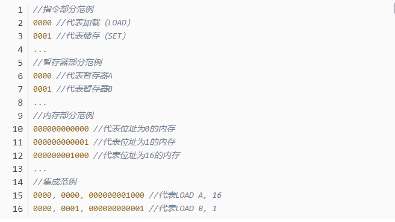

编程语言发展纵览
1.第一代计算机语言——机器语言
机器语言，即第一代计算机语言。 机器语言是用二进制代码（0和1）表示的计算机能直接识别和执行的一种机器指令的集合， 能够直接被机器执行。 早期的程序设计均使用机器语言，程序员们将用0, 1数字编成的程序代码打在纸带或卡片上， 1打孔，0不打孔，再将程序通过纸带机或卡片机输入计算机，进行运算。
-
优点：
- 能够被机器直接运行
- 灵活
- 速度非常快
-
缺点：
- 不便于阅读
- 难以记忆
- 很难确保程序的正确性、高效性
- 移植性、重用性差
下面是一段机器语言代码示例

2.第二代计算机语言——汇编语言
机器语言由纯粹的0和1构成，十分复杂，不方便阅读和修改，也容易产生错误。 程序员们很快就发现了使用机器语言带来的麻烦，它们难于辨别和记忆， 给整个产业的发展带来了障碍，于是汇编语言产生了。
汇编语言， 即第二代计算机语言， 用一些容易理解和记忆的缩写单词来代替一些特定的指令， 例如：用"ADD"代表加法操作指令，"SUB"代表减法操作指令，以及"INC"代表增加1， "DEC"代表减去1，"MOV"代表变量传递等等， 通过这种方法，人们很容易去阅读已经完成的程序或者理解程序正在执行的功能， 对现有程序的bug修复以及运营维护都变得更加简单方便。
但计算机的硬件不认识字母符号， 这时候就需要一个专门的程序把这些字符变成计算机能够识别的二进制数或机器语言。 因为汇编语言只是将机器语言做了简单编译，并没有根本上解决机器语言的特定性， 所以汇编语言和机器自身的编程环境息息相关，推广和移植很难， 但是还是保持了机器语言优秀的执行效率， 因为他的可阅读性和简便性，汇编语言到现在依然是常用的编程语言之一。
汇编语言不像其他大多数的程序设计语言一样被广泛用于程序设计。 在今天的实际应用中，它通常被应用在底层，硬件操作和高要求的程序优化的场合。 驱动程序、嵌入式操作系统和实时运行程序都需要汇编语言。
-
优点：
- 可以轻松的读取存储器状态以及硬件I/O接口情况
- 编写的代码因为少了很多编译的环节，可以能够准确的被执行
- 作为一种低级语言，可扩展性很高
-
缺点：
- 代码非常单调，特殊指令字符很少，造成了代码的冗长以及编写的困难
- 仍然需要自己去调用存储器存储数据，很容易出现BUG，而且不易调试
- 后期维护时候需要耗费大量的时间
- 兼容性差，依赖于特定的计算机硬件
下面是一段汇编语言代码示例

3.第三代计算机语言——高级语言
在编程语言经历了机器语言，汇编语言等更新之后， 人们发现了限制程序推广的关键因素——程序的可移植性。 需要设计一个能够不依赖于计算机硬件，能够在不同机器上运行的程序。 这样可以免去很多编程的重复过程，提高效率， 同时这种语言又要接近于数学语言或人的自然语言。
1956年，美国计算机科学家约翰·巴克斯带领团队开发出了世界上第一个高级编程语言FORTRAN
FORTRAN语言是世界上第一个被正式推广使用的高级语言。 它是1954年被提出来的，1956年开始正式使用，直到2022年已有六十六年的历史， 但仍历久不衰，FORTRAN始终是数值计算领域所使用的主要语言。
1958年，ALGOL（ALGOrithmic Language）算法语言委员会小组成立
1958年，ALGOL 58诞生;1960年，ALGOL 60诞生; 1966年，ALGOL W出现，碍于调整与改进幅度略显保守， 委员会并未以此作为ALGOL 60的后继者; 1968年，ALGOL 68诞生
1970年，瑞士计算机科学家Niklaus Wirth研制出了第一个结构化编程语言Pascal
Pascal由瑞士苏黎世联邦工业大学的Niklaus Wirth教授于六十年代末设计并创立， Pascal基于ALGOL算法语言实现。 1971年，Niklaus Wirth以电脑先驱帕斯卡pascal的名字为之命名。 Pascal是最早出现的结构化编程语言，具有丰富的数据类型和简洁灵活的操作语句。 高级语言发展过程中，Pascal是一个重要的里程碑。 Pascal语言是第一个系统地体现了E.W.Dijkstra和C.A.R.Hoare定义的结构化程序设计概念的语言。
1972年，C语言（The C Programming Language）诞生
1963年，英国剑桥大学基于ALGOL 60推出了CPL（Combined Programming Langurage）语言。 1967年，英国剑桥大学的 Matin Richards对CPL语言做了简化， 推出了 BCPL （the Basic Combined Programming Language）语言。 1969年，美国贝尔实验室的肯·汤普森（Kenneth Lane Thompson），以BCPL语言为基础， 又作了进一步的简化，设计出了很简单而且很接近硬件的B语言（取BCPL的首字母）， 并且用B语言写了初版UNIX操作系统（又叫UNICS）。 1972年，美国贝尔实验室的丹尼斯·里奇（D.M.Ritchie ）在B语言的基础上最终设计出了一种新的语言， 他取了BCPL的第二个字母作为这种语言的名字，这就是C语言。 1973年初，C语言的主体完成。汤普森和里奇迫不及待地开始用它完全重写了UNIX操作系统。
1983年， 美国计算机科学家本贾尼·斯特劳斯特卢普改良了C语言， C++（The C++ Programming Language/c plus plus ）诞生
20世纪70年代中期，本贾尼·斯特劳斯特卢普（Bjarne Stroustrup）在剑桥大学计算机中心工作。 他使用过Simula和ALGOL，接触过C。他对Simula的类体系感受颇深，对ALGOL的结构也很有研究， 深知运行效率的意义。既要编程简单、正确可靠，又要运行高效、可移植，是Bjarne Stroustrup的初衷。 以C为背景，以Simula思想为基础，正好符合他的设想。
1979年，本贾尼·斯特劳斯特卢普（Bjame Sgoustrup）到了Bell实验室， 开始从事将C改良为带类的C（C with classes）的工作。 1983年该语言被正式命名为C++。
C++是C语言的继承，它既可以进行C语言的过程化程序设计， 又可以进行以抽象数据类型为特点的基于对象的程序设计， 还可以进行以继承和多态为特点的面向对象的程序设计。 C++擅长面向对象程序设计的同时，还可以进行基于过程的程序设计。
1990年，荷兰数学和计算机科学研究学会的吉多·范罗苏姆基于ABC语言，研发出了Python语言。
Python提供了高效的高级数据结构，还能简单有效地面向对象编程。 Python语法和动态类型，以及解释型语言的本质， 使它成为多数平台上写脚本和快速开发应用的编程语言， 它已被逐渐广泛应用于系统管理任务的处理、Web编程、数据科学研究、网络爬虫、游戏开发、人工智能、大数据等。
1991年，微软公司推出了Visual Basic（简称VB）语言
Visual Basic（简称VB）是Microsoft公司开发的一种通用的基于对象的程序设计语言， 为结构化的、模块化的、面向对象的、包含协助开发环境的事件驱动为机制的可视化程序设计语言。 是一种可用于微软自家产品开发的语言。
1993年，Lua诞生，它是一个小巧的脚本语言。
Lua是巴西里约热内卢天主教大学（Pontifical Catholic University of Rio de Janeiro） 里的一个由Roberto Ierusalimschy、Waldemar Celes 和 Luiz Henrique de Figueiredo三人 所组成的研究小组于1993年开发的。 其设计目的是为了通过灵活嵌入应用程序中从而为应用程序提供灵活的扩展和定制功能。 Lua由标准C编写而成，几乎在所有操作系统和平台上都可以编译，运行。 Lua的目标是成为一个很容易嵌入其它语言中使用的语言。 很多应用程序、游戏使用LUA作为自己的嵌入式脚本语言，以此来实现可配置性、可扩展性。 这其中包括魔兽世界、博德之门、愤怒的小鸟、QQ三国、VOCALOID3、Garry’s Mod、太阳神三国杀、游戏王ygocore和饥荒等。
1994年，丹麦程序员Rasmus Lerdorf根据C语言、Java和Perl多个语言的特色语法研发出了PHP语言。
PHP是在服务器端执行的脚本语言，尤其适用于Web开发并可嵌入HTML中， PHP同时支持面向对象和面向过程的开发，使用上非常灵活。
1995年，Sun公司的詹姆斯·高斯林带领他的团队对C++进行改写，诞生了Java语言
1996年1月，Sun公司发布了Java的第一个开发工具包（JDK 1.0），这是Java发展历程中的重要里程碑， 标志着Java成为一种独立的开发工具。9月，约8.3万个网页应用了Java技术来制作。 10月，Sun公司发布了Java平台的第一个即时（JIT）编译器。 1997年2月，JDK 1.1面世，在随后的3周时间里，达到了22万次的下载量。 4月2日，Java One会议召开，参会者逾一万人，创当时全球同类会议规模之纪录。 9月，Java Developer Connection社区成员超过10万。
1995年，Netscape公司的Brendan Eich，在网景导航者浏览器上研发出了JavaScript。
JavaScript最开始取名LiveScript，因为Netscape与Sun合作， Netscape管理层希望它外观看起来像Java，因此取名为JavaScript。
1995年，日本的松本行弘(Yukihiro Matsumoto)推出了Ruby的第一个版本Ruby 0.95
Ruby不久便凭借其独特的魅力横扫日本，它是一种简单快捷的面向对象（面向对象程序设计）脚本语言。
2000年，微软公司的安德斯·海尔斯伯格（Anders Hejlsberg）带领他的团队基于C和C++研发出C#
C#是微软公司发布的一种由C和C++衍生出来的 面向对象的编程语言、运行于.NET Framework和.NET Core(完全开源，跨平台)之上的 高级程序设计语言。 C#看起来与Java有着惊人的相似；它包括了诸如单一继承、接口、 与Java几乎同样的语法和编译成中间代码再运行的过程。 但是C#与Java有着明显的不同，它借鉴了Delphi的一个特点， 与COM（组件对象模型）是直接集成的，而且它是微软公司 .NET windows网络框架的主角。
2000年，易语言最早的版本发布
易语言（EPL）是一门以中文作为程序代码编程语言，其以“易”著称，创始人为吴涛。 易语言早期版本的名字为E语言。 创造易语言的初衷是进行用中文来编写程序的实践，方便中国人以中国人的思维编写程序， 并不用再去学习西方思维。易语言的诞生极大的降低了编程的门槛和学习的难度。 从2000年以来，易语言已经发展到一定的规模，功能上、用户数量上都十分可观。 目前易语言已取得国家级鉴定，鉴定会专家一致认为：易语言在技术上居于国内领先地位， 达到了当前同类产品的国际先进水平。易语言是一个自主开发，适合国情， 不同层次不同专业的人员易学易用的汉语编程语言。 易语言降低了广大电脑用户编程的门槛，尤其是根本不懂英文或者英文了解很少的用户， 可以通过使用本语言极其快速地进入Windows程序编写的大门。
2009年， Google 的 Robert Griesemer，Rob Pike 及 Ken Thompson 研发出Go语言
Go语言是一种静态强类型、编译型语言，语法与 C 相近， 但功能上有：内存安全，GC（垃圾回收），结构形态及 CSP-style 并发计算。
2014年，苹果于2014年WWDC苹果开发者大会发布的新开发语言Swift
Swift可与Objective-C共同运行于macOS和iOS平台，用于搭建基于苹果平台的应用程序。 Swift是一款易学易用的编程语言， 而且它还是第一套具有与脚本语言同样的表现力和趣味性的系统编程语言。 Swift的设计以安全为出发点，以避免各种常见的编程错误类别。 2015年12月4日，苹果公司宣布其Swift编程语言开放源代码。 长600多页的The Swift Programming Language 可以在线免费下载。
2015年，Rust 1.0 第一个稳定版本发布
Rust语言最早在2006年是作为 Mozilla 员工 Graydon Hoare 的私人项目出现。 Rust是一门系统编程语言，专注于安全，尤其是并发安全， 支持函数式和命令式以及泛型等编程范式的多范式语言，Rust在语法上和C++类似。 Rust致力于成为优雅解决高并发和高安全性系统问题的编程语言，适用于大型场景， 即创造维护能够保持大型系统完整的边界。 这就导致了它强调安全，内存布局控制和并发的特点。 标准Rust性能与标准C++性能不相上下。
4.编程语言的未来发展趋势
从1951年至今，人类一共发明了256种编程语言，它们的面世， 不断迭代着编程技术的发展，进而驱动着社会科技滚滚向前、日新月异， 每一种语言的出现都带有某些新特征，每一种语言都并非彼此独立的。 而它们仍旧在不断的革新，不断的发展，相信很快就会有超出这个清单的新编程语言出现。
虽然新语言在诞生，但我们也不能忽视每个编程语言都在不断的发展和变化。 在 2022 年谷歌推出的 Carbon，旨在修复 C++的几个明显缺点， 提高 C++的可读性、安全性，并平滑语言的学习曲线。 Carbon 和 D 语言有点相似，属于对 C++现代化的改良派， 但是和 D 语言不同的是：Carbon 有个好父亲，并且通过「双向互操作性」融入 C++生态， 也抛弃 了C++的历史包袱，并使得语言的语法可以重新设计。
编程语言的发展离不开计算机领域其他技术的发展。 编程语言发展至今，特性的互相借鉴的情况越来越普遍， 语言生态互通也更常见（如直接兼容，或者 Bridging 技术）， 编译型和解释型界限也越来越模糊 （比如 Dart 既能编译运行也能解释运行，还能边解释运行边编译）， 语言之间的性能差异也越来越小（V8 引擎，JIT，硬件性能提高）， 语言之间的互相转换也开始普遍（Kotlin to Java to JavaScript，Dart to Javascript）。 甚至，在 AI 的加持下，准确的把具有垃圾回收语言（如 Kotlin）往没有垃圾回收语言（如 C）的转换， 也变得可能。
长期展望：编程语言将何去何从？
探讨这个问题，我们要回到编程语言的初心：什么是编程语言？ 编程语言是被标准化的、用来向计算机发出指令、让程序员利用计算机能力的工具。
简而言之，编程语言只是我们利用计算机能力的工具。 小白用户能理解按钮、图片、短视频，计算机能理解汇编指令。 这时需要一群聪明的人把用户需求转换为机器代码，这群人用编程语言让这项工作变得简单。
二十年后我们还需要一群人专门设计交互、视觉、框架、代码来架起小白用户使用计算机的桥梁吗？ 也许到那时的人们也许分不清 AI 和计算机的区别了，到那时利用计算机的能力也许就像我们现在跟同事说话交流一样简单。
也许你会觉得 AI 也需要编程语言去实现，以方便后续的维护和迭代。 但是也许那时 AI 已经具备自己维护代码的能力了，也许人类已经看不懂什么是 C++、Python， 只有 AI 懂了，甚至 AI 自己发明新的编程语言编写了下一代的 AI （AI 可能已经觉得可读性是个包袱了，直接写机器代码不是更爽？）。 就如第一个 C 语言编译器是用汇编写的，后面 C 语言编译器是用 C 语言写的一样。 我们前面讨论的大部分的编程语言注定回到了历史的垃圾桶里。本来无一物，何处惹尘埃。
编程语言也许将在历史的发展中失去了作用和价值， 成为未来博物馆中一个陈列的展品，向世人展示人类过去经历的苦难。